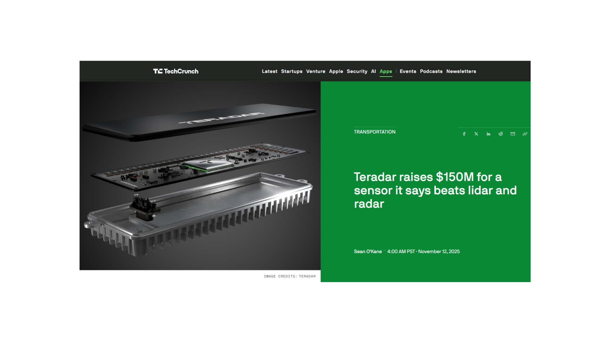
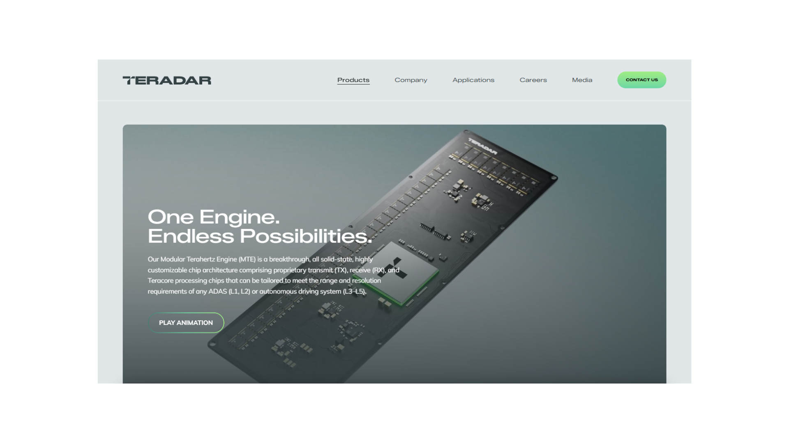
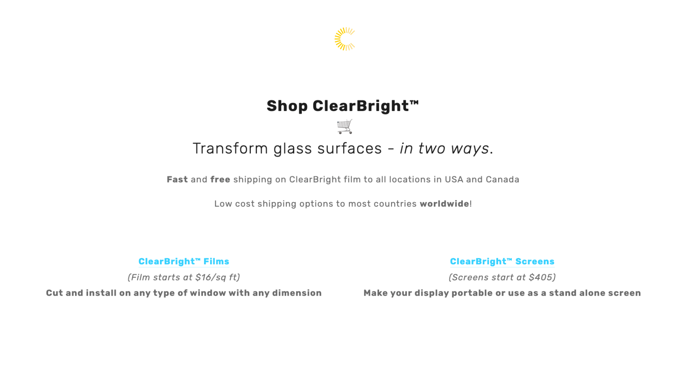
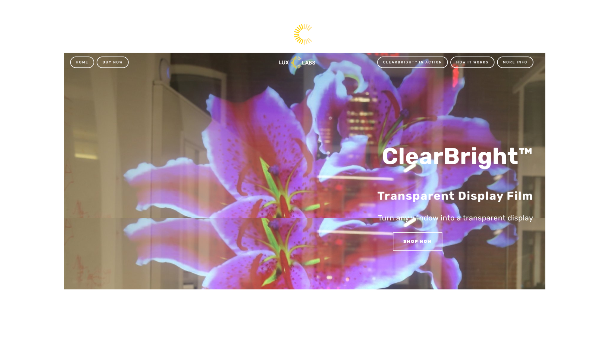

Finding partners
A strategic partner narrative opens early doors that cold outreach never can.
Early-stage product marketing and commercial strategy for technical founders building new, high-value, hard-to-explain things.
I help founders, technologists, and deep domain experts translate between technical depth and the commercial clarity needed to raise, hire, partner, grow, and eventually sell.
Working on something complex and consequential?
Marketing isn't just the last mile.
Hard tech doesn't ship on two-week cycles. In long, capital-intensive development startups, you get significantly fewer shots. That's why the market story has to grow and evolve alongside your core tech - not just get bolted on at the very end.
Customer and competitive research should shape what you build - not just how you sell it.
A strategic partner narrative opens early doors that cold outreach never can.
Mission and story are central to recruiting and compensation strategy.
A clear, distinct investor narrative helps you raise faster, on better terms.
Your second market needs positioning before you've finished the first.
Adjacent industries, regulators, acquirers - each needs a variation on the story.
Case studies and proof points can take years to build. Start early.
Marketing can't fix underlying technology, your org design, or any legal / IP problems. But a GTM voice belongs in the room early - especially as your product is still being built.
Teradar builds next-generation terahertz sensing that delivers long-range perception as an alternative to radar and LiDAR in safety-critical environments.
Helped with the seed-stage fundraise: designed the investor pitch deck, coached the CEO on communications, and built a technical appendix used across 50+ early investor meetings.
Supported Teradar through Series A and a $150M Series B, then produced technical product marketing videos and CES assets to demonstrate improved sensor capabilities.


Lux Labs built transparent display materials and projection film, and the work was turning technical complexity into a simpler buying story.
Simplified the ecommerce catalog from ~30 SKUs to two core offers, rebuilt pricing and packaging, and aligned the messaging to drive higher conversion and sales.
Improved gross margins, conversions, and sales, delivering about 100% ROI within six weeks. The pricing and packaging strategy stayed intact through acquisition.
“Lux Labs hired Jeremy to support our ClearBright product launch. He helped us overhaul our e-commerce approach by redesigning our website, simplifying our pricing and packaging, and creating new marketing content. He helped us step back and evaluate how to communicate with our customers.”


If the technology is genuine but the commercial story is still being figured out -
I'd love to connect.
Open to FT roles or advisory work where commercial strategy is part of the build.